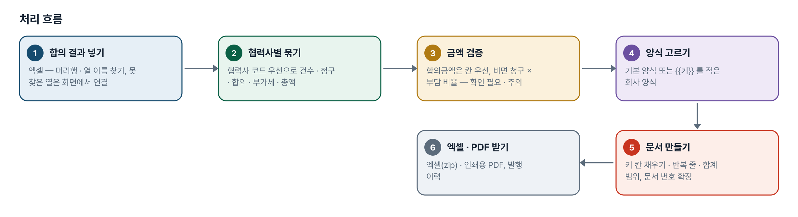
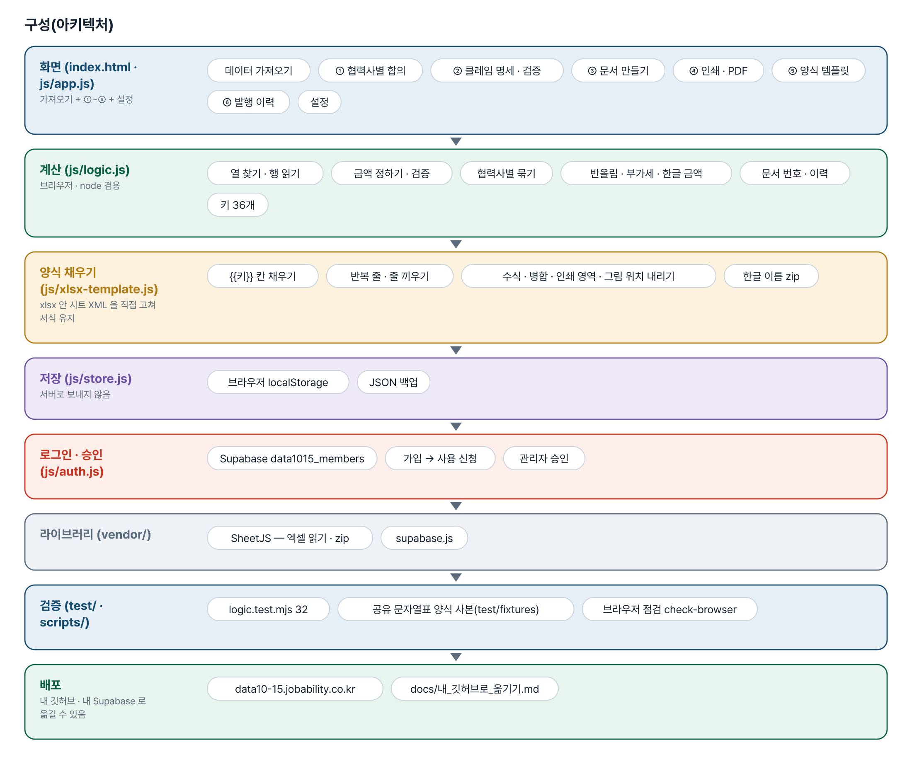
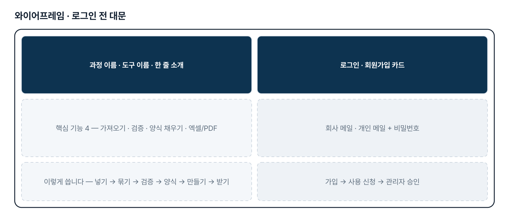
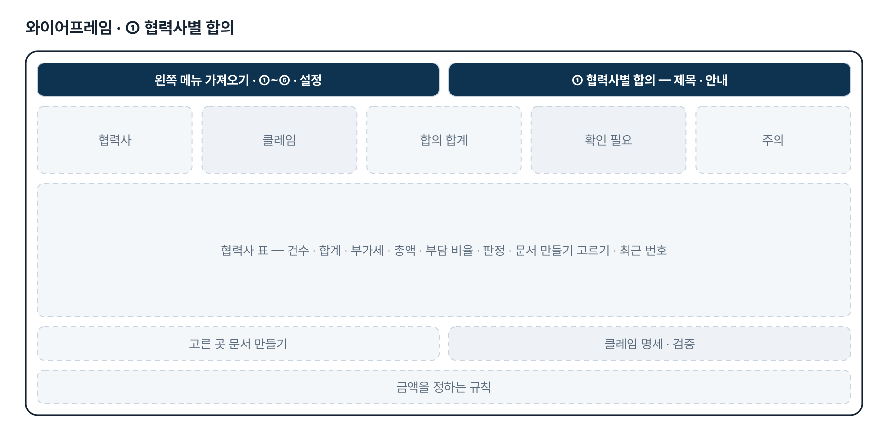
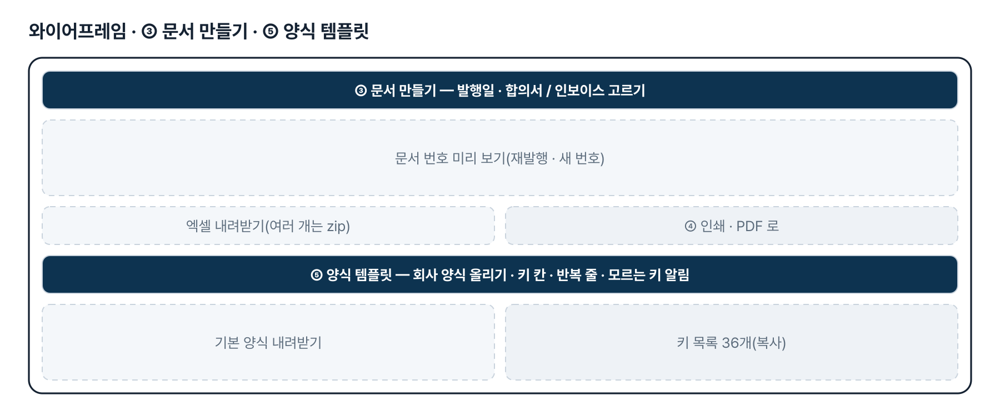
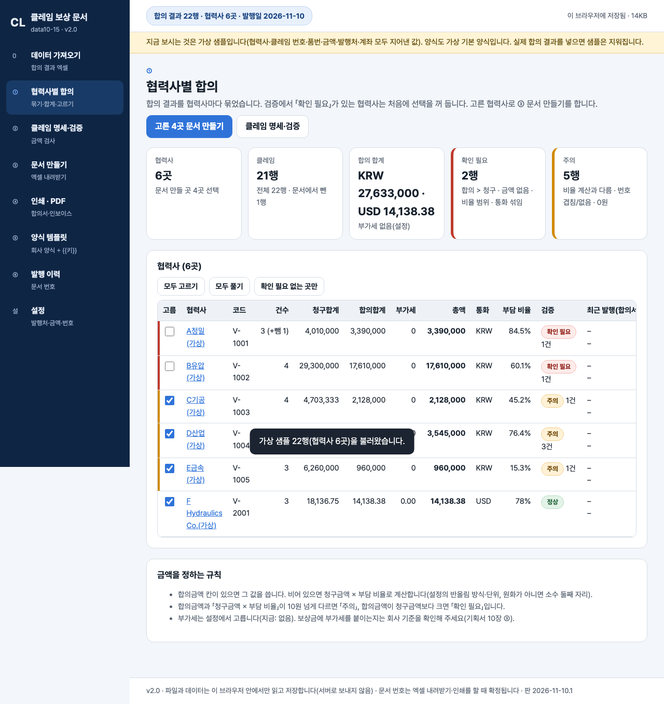

기획서 내려받기
파이프라인 · 아키텍처 · 와이어프레임 · 개발일지가 들어간 워드 문서입니다. 버전마다 따로 남깁니다.
| 버전 | 날짜 | 바뀐 점 | 파일 |
|---|---|---|---|
| v2.0 | 2026-11-10 | 최종 기획서 — 파이프라인 · 아키텍처 · 와이어프레임 정리 / 로그인 · 사용 신청 · 관리자 승인(요청자 Supabase 로 옮길 수 있게) / 로그인 전 대문 | 워드 내려받기 |
요구사항과 구현
| 기획서 요구 | 구현 |
|---|---|
| 합의 Excel 업로드 → 협력사 정보 · 클레임별 합의금액 자동 추출 | 머리행 자동 인식 · 열 이름 별칭 · 열 연결 화면 · 합계 줄 건너뛰기, 협력사(코드 우선)별 묶기 |
| 기존 지정 양식에 맞춰 문서 자동 작성 | 양식에 {{키}} 를 적어 올리면 서식(글꼴 · 테두리 · 병합 · 직인 그림) 그대로 값만 채움, 반복 줄 · 합계 범위 늘리기 |
| 합의서 · 인보이스 각각 Excel 다운로드 | 한 개 또는 zip 한 파일(한글 이름), 문서 번호 자동 채번 · 발행 이력 |
| 합의서 · 인보이스 PDF 다운로드 | 인쇄용 기본 양식 → 브라우저 「PDF로 저장」. 회사 양식 그대로의 PDF 자동 변환은 2단계 |
| 수작업 입력 오류 최소화 | 합의 > 청구 · 금액 없음 · 비율 범위 · 통화 섞임(확인 필요), 비율 계산과 다름 · 번호 겹침(주의), 한글 금액 · 합계 자동 |
| 결재 · 메일 발송 · 팀 공유 | 2단계 — 지금은 브라우저 저장 + JSON 백업 |
그림으로 보기






개발일지
2026-11-10 · 최종 기획서 · 로그인 · 대문
- 로그인 · 사용 신청 · 관리자 승인 키트(회원 표 data1015_members)
- 로그인 전 대문 문구를 기획서의 핵심 기능 · 처리 흐름에서
- 최종 기획서 v2.0(워드 · plan.html · 그림 · CHANGELOG), README 정리
- 시험 32개 통과, 이전 점검 통과
2026-10-27 · 판 맞추기
- index.html 의 ?v= · 계산 파일 판을 함께 올리고, 섞이면 「새 판이 나왔습니다」로 멈춤
- 배포 직후 옛 화면을 막는 fresh-guard
2026-10-21 · 기획서 정리 · 1단계
- 가상 합의 결과 22행(협력사 6곳) · 가상 기본 양식 2종
- xlsx 안 시트 XML 을 직접 고쳐 서식 그대로 채우기, 반복 줄 · 합계 범위 · 직인 위치
- 문서 번호 · 재발행 · 발행 이력, 인쇄용 PDF, 한글 이름 zip
- 로직 검사 31 · 브라우저 점검 40